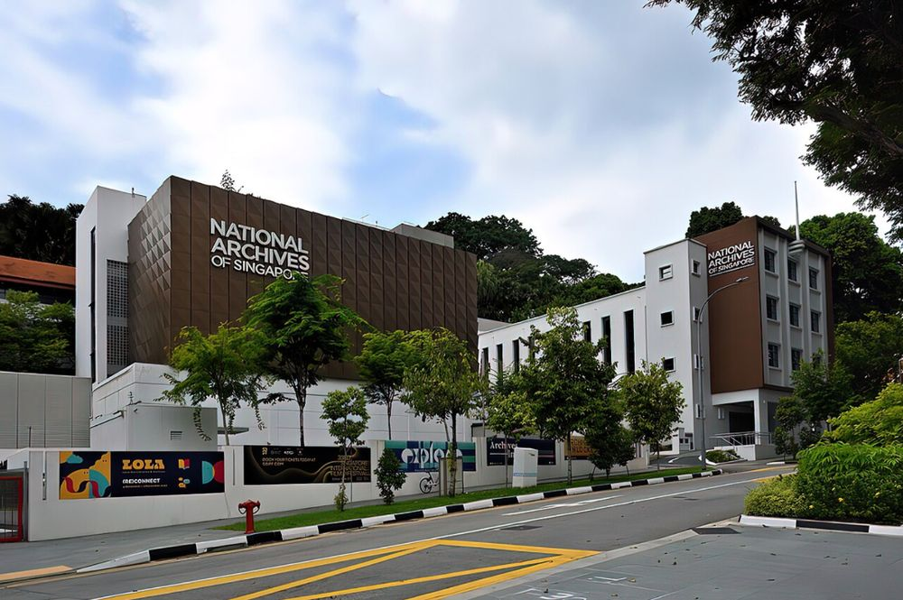
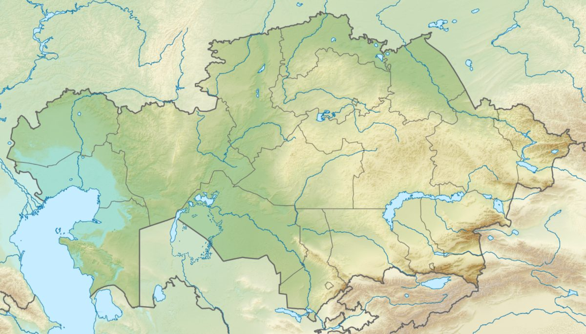

«Мұрағат ісі» пәні бойынша топтық жоба
Сингапурдың Ауызша тарих орталығы үлгісімен Қазақстанға ұсынылған «Дала дауысы» архиві.

Зерттелген архив
1979 жылдан бері Ұлттық архив жанындағы орталық куәгерлермен сұхбат жазып, сақтап, көпшілікке ашады. Сұхбат берушілер арасында рикша тартушылар да, Ли Куан Ю да бар.
Портал үлгісі
Үлгі сұхбаттар ойдан құрастырылған. Домбыра үні браузерде синтезделеді, мәтінді сөйлеу синтезі оқиды.
Қазақстан архивтері
Елімізде 236 мемлекеттік архив жұмыс істейді, оларда 27,8 млн сақтау бірлігі бар. Картадағы архивті басыңыз.

Карта: Wikimedia Commons, CC BY-SA 3.0Технологиялар
SHA-256: бір әріп өзгерсе, қолтаңба да өзгереді
…Сызықты жылжытыңыз: бұрын және кейін
Телефонмен сканерлеп, порталды ашыңыз
Ұсынылатын модель
«Дала дауысы» — Ұлттық архив жанындағы ауызша тарих орталығы: қазақ шаңырағы мен Сингапур тәжірибесі бір ғимаратта. Ғимаратты айналдырып, нөмірлерді басыңыз.
Фотолар
Дереккөздер
↑ ↓ таңдау · Enter ашу · Esc жабу